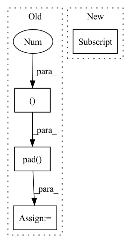

Pattern ID :2937
Before Change
// image can attend to all of text
mask = F.pad( mask, (text_len, 0 ), value = True)
dots_image.masked_fill_(~mask, mask_value)
attn_image = dots_image.softmax(dim = -1)
out_image = einsum("b i j, b i j d -> b i d", attn_image, v_img)After Change
mask = default(mask, lambda: torch.ones(b, text_len, device = device).bool())
x = F.pad(x, (0, 0, 0, padding), value = 0)
mask = mask[:, :text_len]
// derive query / keys / values
qkv = self.to_qkv(x).chunk(3, dim = -1)In pattern: SUPERPATTERN
Frequency: 4
Non-data size: 4
Instances Fragment ID: 16126964
Project Name: lucidrains/dalle-pytorch
Commit Name: c27f48c4373942167a0cc2ac2238f67af2479fe3
Time: 2021-02-14
Author: lucidrains@gmail.com
File Name: dalle_pytorch/attention.py
M Class Name: SparseConvCausalAttention
N Class Name: SparseConvCausalAttention
M Method Name: forward(3)
N Method Name: forward(3)
M Parent Class: nn.Module
N Parent Class: nn.Module
M File Name: dalle_pytorch/attention.py
N File Name: dalle_pytorch/attention.py
M Start Line: 92
M End Line: 154
N Start Line: 92
N End Line: 164
Before Change
padding = seq_len - n
mask = default(mask, lambda: torch.ones(b, n, device = device).bool())
x = F.pad(x, (0, 0, 0, padding), value = 0)
mask = F.pad( x, (0 , padding ), value = False)
qkv = self.to_qkv(x).chunk(3, dim = -1)
q, k, v = map(lambda t: rearrange(t, "b n (h d) -> (b h) n d", h = h), qkv)
After Change
mask = default(mask, lambda: torch.ones(b, text_len, device = device).bool())
x = F.pad(x, (0, 0, 0, padding), value = 0)
mask = mask[:, :text_len]
// derive queries / keys / values
qkv = self.to_qkv(x).chunk(3, dim = -1) Fragment ID: 16126960
Project Name: lucidrains/dalle-pytorch
Commit Name: c27f48c4373942167a0cc2ac2238f67af2479fe3
Time: 2021-02-14
Author: lucidrains@gmail.com
File Name: dalle_pytorch/attention.py
M Class Name: SparseAxialCausalAttention
N Class Name: SparseAxialCausalAttention
M Method Name: forward(3)
N Method Name: forward(3)
M Parent Class: nn.Module
N Parent Class: nn.Module
M File Name: dalle_pytorch/attention.py
N File Name: dalle_pytorch/attention.py
M Start Line: 191
M End Line: 241
N Start Line: 201
N End Line: 259
Before Change
x = x.expand(1, 3, 1, 1)
hPad = max(0, 32 - h)
wPad = max(0, 32 - w)
x = F.pad( x, (0, wPad, 0, hPad ))
return self._quantizer(self._encoder(x)), torch.tensor([h, w], dtype=torch.int)
class RefDecoder(nn.Module):After Change
head = self._heads[i]
z = head(latent)
if i < self._levels - 1:
mapper = self._mappers[i]
latent = mapper(latent)
code = self._quantizers[i](z)
hard = self._deQuantizers[i](code)
latent = latent - hard Fragment ID: 16126958
Project Name: xiaosu-zhu/mcquic
Commit Name: 3ca26f40dc8d00ed5fbebee4a77654f9d1d51939
Time: 2021-10-08
Author: xiaosu.zhu@outlook.com
File Name: src/mcqc/evaluation/refModel.py
M Class Name: RefEncoder
N Class Name: RefEncoder
M Method Name: forward(2)
N Method Name: forward(2)
M Parent Class: nn.Module
N Parent Class: nn.Module
M File Name: src/mcqc/evaluation/refModel.py
N File Name: src/mcqc/evaluation/refModel.py
M Start Line: 106
M End Line: 114
N Start Line: 136
N End Line: 150
Before Change
tokens = torch.cat((text_emb, image_emb), dim = 1)
if exists(mask):
mask = F.pad( mask, (0 , self.image_seq_len ), value = True)
out = self.transformer(tokens, mask = mask)
out = self.to_logits(out)
After Change
tokens = torch.cat((tokens, image_emb), dim = 1)
if exists(mask):
mask = F.pad(mask, (0, image_emb.shape[1] ), value = True)
out = self.transformer(tokens, mask = mask)
logits = self.to_logits(out) Fragment ID: 16126956
Project Name: lucidrains/dalle-pytorch
Commit Name: 2b20d390cc211536b2061fc231ed2243bb1a35a2
Time: 2021-01-06
Author: lucidrains@gmail.com
File Name: dalle_pytorch/dalle_pytorch.py
M Class Name: DALLE
N Class Name: DALLE
M Method Name: forward(5)
N Method Name: forward(5)
M Parent Class: nn.Module
N Parent Class: nn.Module
M File Name: dalle_pytorch/dalle_pytorch.py
N File Name: dalle_pytorch/dalle_pytorch.py
M Start Line: 177
M End Line: 205
N Start Line: 235
N End Line: 268